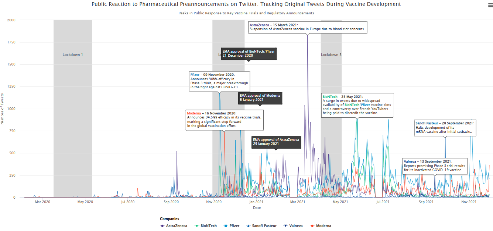
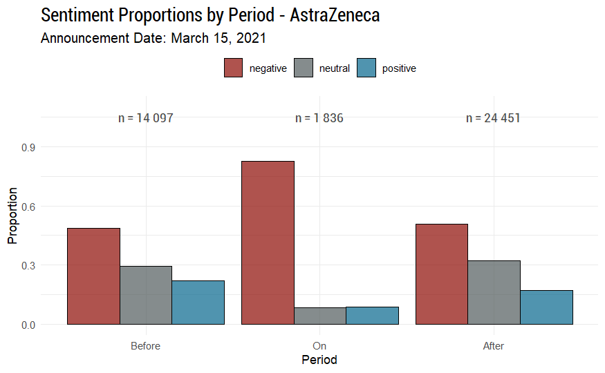

| title: “Public Reaction to Pharmaceutical Preannouncements on Social Media: A Signaling Perspective” |
| #bibliography: references.bib |
| author: |
| - name: Olivier Caron |
| #orcid: 0000-0000-0000-0000 |
| email: olivier.caron@dauphine.psl.eu |
| affiliations: |
| name: “Paris Dauphine - PSL” |
| city: Paris |
| state: France |
| - name: Christophe Benavent |
| orcid: 0000-0002-7253-5747 |
| email: christophe.benavent@dauphine.psl.eu |
| affiliations: |
| name: “Paris Dauphine - PSL” |
| city: Paris |
| state: France |
| date: 04/22/2025 |
| date-format: long |
| format: |
| beamer: |
| theme: metropolis |
| navigation: vertical |
| aspectratio: 169 |
| pdf-engine: xelatex |
| mainfont: Latin Modern Sans #Fira Sans |
| lang: en |
| header-includes: | |
| [frame number] |
| #bibliography: references.bib |
| #csl: apa.csl |
## Context During the COVID-19 Pandemic
During the COVID-19 pandemic, managing public perception became vital for pharmaceutical companies.
High Stakes Environment: Global need for vaccines created immense pressure to get the first mover advantage.
- Social media became a key conduit for information, opinion, and emotion (Zhang & Cozma, 2021).
Strategic Communication vs. Public Discourse: Firms used preannouncements to signal progress (Eliashberg & Robertson, 1988)
It clashed with organic public discussion, especially on side effects.
Anecdotal reports, amplified online, could shape fear and reputation (Kasperson et al., 1988).
## Context Timeline

## Research Problem and Objectives
Problem: How do mentions of vaccine side effects on French-language Twitter shape public perceptions of major pharmaceutical brands (Pfizer, AstraZeneca, Moderna) during the COVID-19 pandemic (2020-2021)?
Objectives:
Empirically analyze how specific side effects became associated with particular brands in online discourse.
Explore the mechanisms driving online risk perception and its impact on brand narratives
## Theoretical Framework
Signaling theory explains how companies use signals (like preannouncements) to reduce information asymmetry (Akerlof, 1970; Spence, 1973) and convey quality in uncertain markets.
Preannouncements serve multiple roles: informing stakeholders (investors, regulators), influencing competitors, and shaping public expectations (Eliashberg & Robertson, 1988; Robertson et al., 1995; Su & Rao, 2010).
Social Amplification of Risk Framework (SARF): This framework explains how risk perceptions are shaped and amplified (or attenuated) by social processes (Kasperson et al., 1988), especially on digital platforms (“amplification stations”) (Van der Meer, 2018). Peer-to-peer sharing of experiences, particularly negative or alarming ones, can create narratives diverging from scientific consensus (Kasperson et al., 2022).
## Hypotheses
Risk Amplification: Public discourse on side effects will disproportionately amplify certain risks beyond their statistical frequency, aligning with SARF principles
Brand-Specific Associations: Online conversations will construct distinct “side-effect profiles” for different brands, not necessarily mirroring clinical data but reflecting amplified narratives.
Sentiment Dynamics: Positive announcements (e.g., high efficacy) will cause temporary positive sentiment shifts, while negative events (e.g., safety concerns, suspensions) will trigger stronger, more persistent negative sentiment, highlighting negativity bias (Baumeister et al., 2001).
## Methodology Overview
Data: Analyzed approx. 150,000 unique French-language tweets (2020-2021) mentioning Pfizer/BioNTech, Moderna, AstraZeneca, J&J, Sanofi, Valneva, filtered from a larger corpus (Banda et al., 2021). Focused on unique user content after preprocessing (removing RTs, duplicates, non-text elements).
Side Effect Extraction (NER): Used GLiNER, a zero-shot NER model (Zaratiana et al., 2023), fine-tuned on a small annotated set (100 tweets, F1=0.81), to identify side-effect mentions without large specific training data. Side effects were standardized into categories.
Sentiment Analysis: Used XLM-RoBERTa (Barbieri et al., 2021) (fine-tuned for multilingual COVID-19 tweets) to classify tweets as positive, neutral, or negative. Analyzed sentiment shifts “Before”, “On”, and “After” key announcement dates.
## Results: Dominant Side Effects in Discourse
Discourse heavily focused on severe, though statistically rare, events
- Top Mentioned Categories:
- Thrombosis / Blood Clots (3280 mentions)
- Cardiac Issues (myocarditis, etc.) (1603 mentions)
- Death (474 mentions)
- Neurological Issues (353 mentions)
- Hemorrhages / Bleeding (305 mentions)
- This amplification highlights how public concern focuses on dreaded outcomes (Kasperson et al., 2022).
## Results: Brand Discourse Volume (Side Effects)
AstraZeneca (7,660) and Pfizer (7,196) dominated the discourse.
Moderna (1,970) followed significantly behind.
Sanofi (1,163) had notable volume, likely due to national visibility.
BioNTech (256) rarely appeared alone, mostly linked with Pfizer.
Side-Effect Attention Dynamics: The dominance of AstraZeneca and Pfizer in side-effect discussions reflects heightened public scrutiny tied to vaccine brand identity and media focus, while Moderna and Sanofi received less attention, and BioNTech remained largely invisible independently.
## Results: Brand-Specific Side Effect Associations
Distinct side-effect profiles emerged in the online conversation:
AstraZeneca: Strongly linked to thrombotic events, especially during media/regulatory scrutiny. Also linked to cutaneous reactions.
Pfizer: Associated with common reactions (fever, pain) due to wide use, but also became a focal point for broader concerns (cardiac, neurological issues) mentioned online.
Moderna: Associated with cardiac or muscle-related issues, but generally less intensely than the others.
## Results: Sentiment Dynamics (Pfizer & Moderna Efficacy)
::: latex:::
## Results: Sentiment Dynamics (AstraZeneca Suspension)

- AstraZeneca (Mar 15, 2021 - Suspensions): Negative events triggered a lasting dominance of negative sentiment, with minimal recovery.
## Discussion
SARF Effects: Risk narratives amplified online, not fully aligned with clinical data (Kasperson et al., 1988, 2022).
Signaling Issues: Positive announcements clashed with public risk amplification (Heil & Robertson, 1991; Eliashberg & Robertson, 1988).
Brand Reputation: Negative events can rapidly harm brand equity, requiring transparency and engagement (Aaker, 2010).
Methodological Advantage: Fine-tuned GLiNER enables scalable health discourse analysis, still rare in marketing research (Zaratiana et al., 2023; Hartmann & Netzer, 2023).
## Future Research Directions
Long-Term Trust: Study how side-effect discussions impact brand trust over time.
Sentiment & Regulation: Analyze how social media sentiment could influence regulatory actions.
Audience Segmentation: Compare risk perceptions across public, HCPs, and media groups.
Advanced NLP: Use LLMs for deeper sentiment, brand targeting, and misinformation detection.
Real-Time Social Listening: Deploy NER tools for agencies to spot early side-effect signals.
Cross-Cultural Analysis: Explore differences across countries and platforms.
## Questions
Any questions?